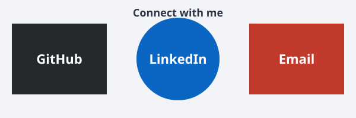

Meal Recommendation App — GDG Hackathon
A team project that helps users discover meals based on budget and preferences, including fasting and non-fasting options and a restaurant locator.

Software Engineering student exploring backend development and AI/ML while building practical projects
I am a 3rd-year Software Engineering student at Addis Ababa Science and Technology University (AASTU) with a strong interest in technology, software development, and solving real-world problems through digital solutions. I enjoy learning by building projects, experimenting with new technologies, and continuously improving my technical skills.
My main interests include Backend Development, Artificial Intelligence and Machine Learning, Web Development, and UI/UX Design. I have experience with Python, C++, JavaScript, HTML, and CSS, and I am expanding my knowledge of software development and modern web technologies.
Alongside my studies, I am an intern at Zigzag Space Architectural Firm, exploring technology in architectural and design-related projects. My ALX Graphic Design background has strengthened my understanding of visual design, user experience, and intuitive interfaces.
I enjoy projects that combine technology, creativity, and problem-solving, and welcome opportunities to learn, collaborate, and build useful solutions.
“Life is not only about where you end up, but also about who you become along the way.”
I believe that life is more than reaching a final destination. Challenges, mistakes, unexpected opportunities, and small achievements shape us. I try to appreciate learning and growing rather than focusing only on the outcome.
I approach technology the same way: every project, problem, and mistake helps me become a better developer. Progress sometimes simply means being better than I was yesterday. I want to keep learning, experimenting, and building things that have a purpose while enjoying the journey.
I am strengthening my foundations in software development and backend technologies while building my knowledge of AI/ML and modern web development. My goal is to design, develop, and deploy complete, useful software solutions.
A team project that helps users discover meals based on budget and preferences, including fasting and non-fasting options and a restaurant locator.
A Ac++ console application for managing cafeteria information and records. Built with C++ and MySQL.
Exploring practical AI and Python solutions, including affordable housing ideas and data-driven problem-solving.
Exploring how software and technology can support architectural and design workflows while gaining professional project collaboration experience.
Completed training in visual communication, UI/UX principles, and digital design with Figma and Canva.
Addis Ababa Science and Technology University, 2024 – present
| Course | Credit Hours | Grade |
|---|---|---|
| Emerging Technology for Engineers | 3 | A- |
| Intro to software engineering and computing | 4 | A- |
| Database | 4 | A- |
| Fundamental of Programming 2 | 3 | A |
| Digital Logic Design | 3 | B |
| Probablity and Statistics | 3 | B+ |
| Total Credit Hours | 17 |
Email: noharkhami@gmail.com
Phone: 0968166386
GitHub: github.com/Hammere1
LinkedIn: linkedin.com/in/hammere-shimelse
